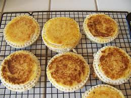

Grilled Cheese

These crustless grilled cheese sandwiches are great to have stashed in the freezer for when the kids need a quick snack.
Easy for little hands to hold, with the cheese sealed inside and no tough crusts, they’re fun for them and convenient for you.
You will need a sandwich sealer for this recipe, and they are easy to find online.
I love a good grilled cheese. I always thought they were the perfect quick and easy bite.
They are so simple and delicious, and making them easy to grab and go on the road makes them somehow even more perfect.
Ingredients
- 8 slices white bread
- 4 slices cheddar cheese
- 2 tablespoons softened butter
Steps
- Spread thin layer of butter on each slice of bread.
- Use round cookie cutter to cut cheese into rounds.
- Lay 4 slices of bread butter side down.
- Place a cheese round on each bread slice.
- Top with remaining bread, butter side up.
- Center sandwich sealer over sandwich, press down 15-30 seconds to seal edges. Discard crusts.
- Repeat with remaining sandwiches.
- Place sandwiches on baking sheet and freeze for 2 hours.
- When ready to eat, preheat air fryer to 380 degrees F and heat sandwiches about 5 minutes.
- Enjoy!